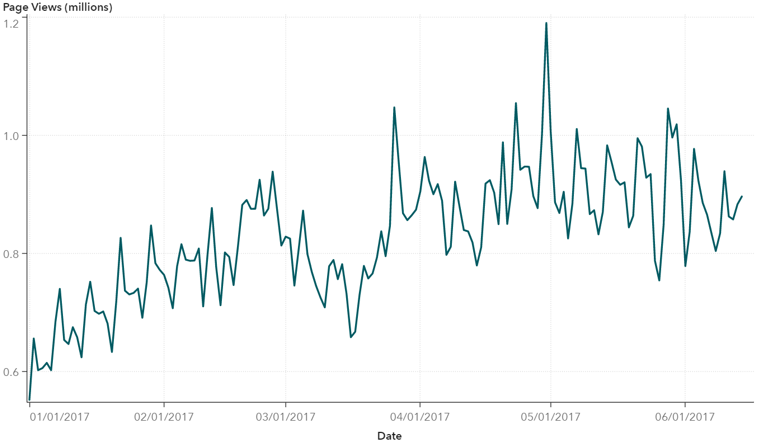
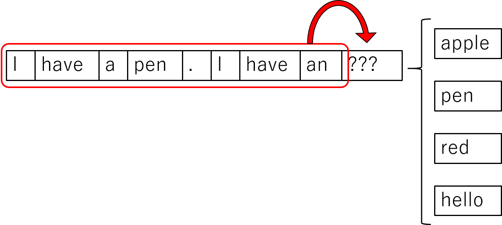
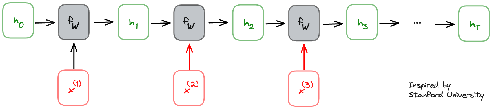
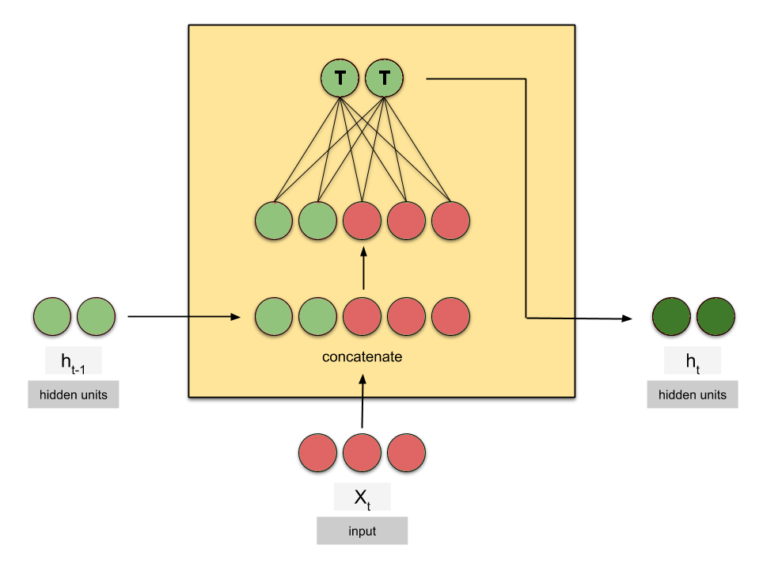
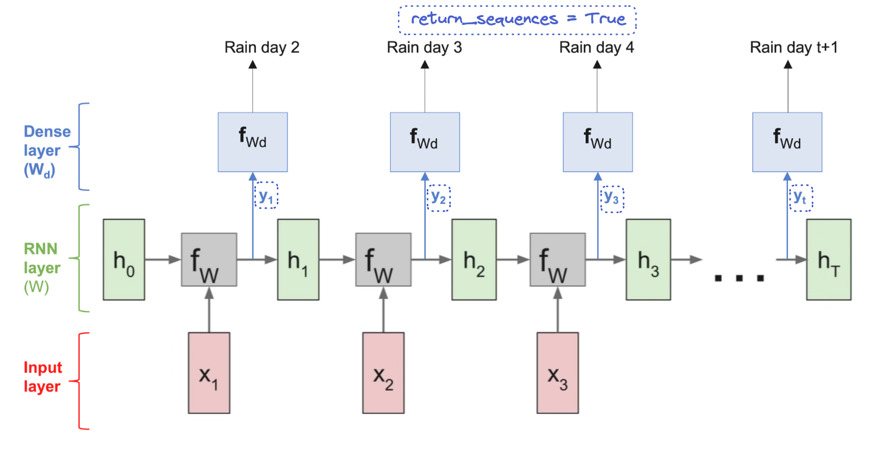
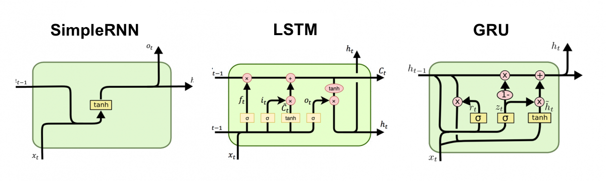
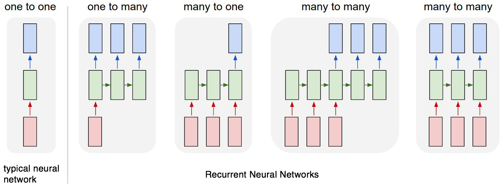
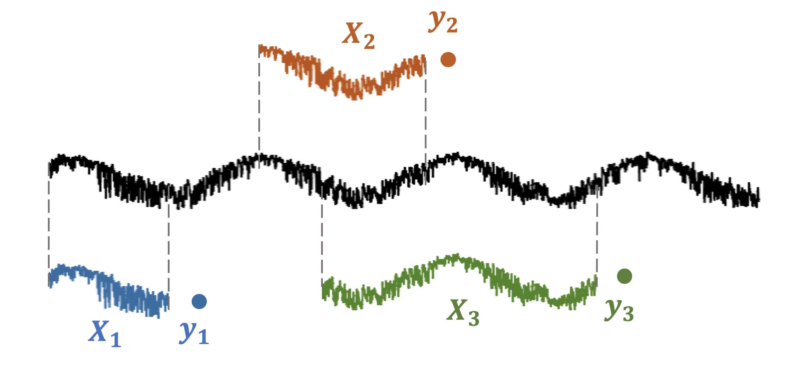

Recurrent Neural Networks
Comprendre les Recurrent Neural Networks (RNN) — input shapes séquentielles, architecture interne (état caché, poids partagés), variantes (SimpleRNN, LSTM, GRU), stacking, padding/masking, et `return_sequences`.
- Cheatsheet — Recurrent Neural Networks
- ️ Récapitulatif — Erreurs clés à éviter
- 0) Rappels
- 1) Introduction aux RNN
- 2) Architecture RNN
- 3) Prédire une séquence : `return_sequences=True`
- 4) Stacking de RNN
- 5) Variantes de RNN : SimpleRNN, LSTM, GRU
- 6) Variations d'architecture
- 7) Padding & Masking — Séquences de longueurs différentes
- 8) Cas d'une seule série temporelle
- Bibliographie
- Challenges
📋 Cheatsheet — Recurrent Neural Networks
Input shape RNN
## X.shape = (n_sequences, n_observations, n_features)
## Exemple : 16 villes, 100 jours, 4 features météo
X.shape # (16, 100, 4)
## y.shape dépend de la tâche :
## Prédire 1 valeur par séquence → (16, 1, 1)
## Prédire une séquence de 8 jours → (16, 8, 1)Architecture RNN de base
from tensorflow.keras import Sequential, Input, layers
model = Sequential()
model.add(Input(shape=(100, 4))) # 100 timesteps, 4 features
model.add(layers.SimpleRNN(units=10, activation='tanh')) # 10 unités mémoire
model.add(layers.Dense(1, activation='linear')) # prédiction régression
model.compile(loss='mse', optimizer='adam')
model.fit(X, y, batch_size=32, epochs=100)SimpleRNN vs LSTM vs GRU
from tensorflow.keras.layers import SimpleRNN, LSTM, GRU
layers.SimpleRNN(units=10, activation='tanh') # le plus simple et rapide
layers.LSTM(units=10, activation='tanh') # mémoire longue (vanishing gradient)
layers.GRU(units=10, activation='tanh') # moins de paramètres que LSTM
## Syntaxe identique — changer juste le type de couchereturn_sequences
## return_sequences=False (défaut) → sort uniquement le dernier h(t)
## Output shape : (batch_size, units)
layers.SimpleRNN(10, return_sequences=False)
## return_sequences=True → sort h(t) à CHAQUE timestep
## Output shape : (batch_size, n_observations, units)
layers.SimpleRNN(10, return_sequences=True)
## ⚠️ Obligatoire si on empile des RNN ou si on prédit une séquenceStacking de RNN
model = Sequential()
model.add(Input(shape=(100, 4)))
model.add(layers.LSTM(32, return_sequences=True)) # ⚠️ return_sequences=True obligatoire
model.add(layers.LSTM(16, return_sequences=False)) # dernière RNN → False
model.add(layers.Dense(1, activation='linear'))
## On empile rarement plus de 3-4 couches RNNPadding & Masking (séquences de longueurs différentes)
from tensorflow.keras.preprocessing.sequence import pad_sequences
from tensorflow.keras.layers import Masking
## Padding : remplir les séquences courtes avec une valeur sentinelle
X_pad = pad_sequences(X, dtype='float32', padding='post', value=-1000)
## padding='post' → remplit à la fin (recommandé)
## value=-1000 → valeur absente du dataset
## Masking : dire au réseau d'ignorer la valeur sentinelle
model = Sequential()
model.add(Input(shape=(max_len, n_features)))
model.add(Masking(mask_value=-1000)) # ignore les timesteps padded
model.add(layers.LSTM(10, activation='tanh'))
model.add(layers.Dense(1, activation='linear'))Compter les paramètres d'une couche RNN
## Params SimpleRNN = n_h × (n_x + n_h + 1)
## n_h = nombre d'unités (units)
## n_x = nombre de features par timestep
## Exemple : SimpleRNN(2) sur 3 features
## → 2 × (3 + 2 + 1) = 12 paramètres
## ⚠️ Ne dépend PAS de la longueur des séquences !Prédire à partir d'une seule série temporelle
## Découper la série en sous-séquences (X, y)
## Fenêtre glissante : 100 observations → prédire la 101ème
## X.shape = (n_windows, window_size, n_features)
## y.shape = (n_windows, 1)⚠️ Récapitulatif — Erreurs clés à éviter
❌ Oublier
return_sequences=Truequand on empile des RNN
❌ La 2ème couche RNN reçoit un vecteur 1D au lieu d'une séquence → erreur
model.add(layers.LSTM(32))→ return_sequences=False par défaut
model.add(layers.LSTM(16))→ ❌ attend une séquence en entrée !
✅ Toujours
return_sequences=Truesauf sur la dernière couche RNN
model.add(layers.LSTM(32, return_sequences=True))→ ✅ sort une séquence
model.add(layers.LSTM(16))→ dernière RNN → False ok
Mauvais input shape : oublier la dimension temporelle
❌ Passer un shape 2D (n_features,) au lieu de 3D (n_observations, n_features)
model.add(Input(shape=(4,))) → ❌ 2D, pas de dimension temporelle
✅ Input shape = (n_observations, n_features) — le batch_size est implicite
model.add(Input(shape=(100, 4))) → ✅ 100 timesteps, 4 features
Padder avec des valeurs qui existent dans le dataset
❌ Padder avec 0 quand il y a des vrais 0 dans les données → confusion
pad_sequences(X, dtype='float32', value=0) → 0 existe déjà dans les données !
✅ Padder avec une valeur absente du dataset + utiliser un Masking layer
pad_sequences(X, dtype='float32', padding='post', value=-1000) puis Masking(mask_value=-1000)
Utiliser relu comme activation d'une couche RNN
❌ ReLU n'est pas bornée → l'état interne peut exploser
layers.SimpleRNN(10, activation='relu') → ❌ risque d'explosion des gradients
✅ Utiliser tanh (défaut) — bornée entre -1 et 1, bonne dérivée seconde
layers.SimpleRNN(10, activation='tanh') → ✅ activation par défaut des RNN
Confondre la sortie du RNN avec la prédiction finale
❌ Croire que la sortie du RNN est directement la prédiction
model.add(layers.SimpleRNN(10)) → sort un vecteur de taille 10, pas la prédiction !
✅ La sortie RNN est l'état interne → il faut une couche Dense ensuite
model.add(layers.SimpleRNN(10)) puis model.add(layers.Dense(1, activation='linear'))
0) Rappels
CNN & Transfer Learning
## CNN classique
model = Sequential()
model.add(Input(shape=(32, 32, 3)))
model.add(Conv2D(32, (5, 5), padding='same', activation='relu'))
model.add(MaxPooling2D(pool_size=(2, 2)))
model.add(Flatten())
model.add(Dense(10, activation='softmax'))
## Transfer Learning
from tensorflow.keras.applications import vgg16
pretrained = vgg16.VGG16(weights='imagenet', include_top=False, input_shape=(256, 256, 3))
pretrained.trainable = False
model = Sequential([pretrained, layers.Flatten(), layers.Dense(10, activation='softmax')])1) Introduction aux RNN
Les Recurrent Neural Networks sont conçus pour traiter des séquences — des observations répétées dans le temps.
- 📸 Features spatiales → CNN
- 📈 Features temporelles → RNN
1.1 Applications
- Prédiction boursière — prédire les valeurs futures à partir de l'historique
- Prédiction vidéo — prédire la prochaine image (vidéo = séquence de frames)
- NLP — prédire le prochain mot (phrase = séquence de mots)


1.2 Input shapes
Shape générale :
$X.\text{shape} = (\text{n\_sequences}, \text{n\_observations}, \text{n\_features})$
| Input | Type de NN | Batch | Dimension temporelle | Features | X.shape |
|---|---|---|---|---|---|
| 📺 Vidéo | Recurrent | 16 | 300 frames | (128, 128, 3) | (16, 300, 128, 128, 3) |
| 🔢 Vecteur | Dense | 16 | - | 7 features | (16, 7) |
1.3 Exemples de shapes (X, y)
Univarié — prédire 1 jour de pluie :
X.shape= (16 villes, 100 jours, 1 feature)y.shape= (16 villes, 1 jour, 1 feature)
Multivarié — prédire 8 jours de pluie à partir de 4 features :
X.shape= (16 villes, 100 jours, 4 features)y.shape= (16 villes, 8 jours, 1 feature)
Classification — ECG → catégorie cardiaque :
X.shape= (None, 100 battements, 4 features)y.shape= (None, 1, 1) = à risque / sain
Les features d'entrée et de sortie ne sont pas nécessairement les mêmes. On peut prédire des avalanches à partir de données météo.
1.4 Récap prédictions

2) Architecture RNN
2.1 Exemple : prédiction de pollution
import numpy as np
## 3 villes, 4 jours, 3 features [température, vent, pollution]
sequence_a = [[10, 25, 50], [13, 10, 70], [9, 5, 90], [7, 0, 95]]
sequence_b = [[25, 20, 30], [26, 24, 50], [28, 20, 80], [22, 3, 110]]
sequence_c = [[15, 10, 60], [25, 20, 65], [35, 10, 75], [36, 15, 70]]
X = np.array([sequence_a, sequence_b, sequence_c]).astype(np.float32)
y = np.expand_dims(np.array([[110], [125], [30]]).astype(np.float32), axis=-1)
print(X.shape) # (3, 4, 3) → 3 séquences, 4 observations, 3 features
print(y.shape) # (3, 1, 1) → 3 séquences, 1 prédiction, 1 featurefrom tensorflow.keras import Sequential, Input, layers
from tensorflow.keras.optimizers import Adam
model = Sequential()
model.add(Input(shape=(4, 3))) # 4 timesteps, 3 features
model.add(layers.SimpleRNN(units=2, activation='tanh')) # 2 unités mémoire
model.add(layers.Dense(1, activation='linear')) # prédiction pollution
model.compile(loss='mse', optimizer=Adam(learning_rate=0.5))
model.fit(X, y, epochs=2000, verbose=0)
model.predict(X) # 1 prédiction par ville2.2 Fonctionnement interne
Le RNN traite les observations une à la fois et maintient un état interne $h$ (mémoire) :
À chaque timestep $t$ :
- L'observation $x^{(t)}$ et l'état précédent $h^{(t-1)}$ sont concaténés
- Passés dans une matrice de poids $W$
- Produisent le nouvel état interne $h^{(t)}$
$h^{(t)} = f_W(h^{(t-1)}, x^{(t)})$

Les mêmes poids $W$ sont utilisés à chaque timestep → poids partagés dans le temps. C'est ce qui rend le RNN capable de traiter des séquences de longueurs variables.

2.3 Compter les paramètres
$\text{Params SimpleRNN} = n_h \times (n_x + n_h + 1)$
Où $n_h$ = nombre d'unités, $n_x$ = nombre de features par timestep.
n_x = 3 # 3 features (température, vent, pollution)
n_h = 2 # 2 unités mémoire
n_h * (n_x + n_h + 1) # 2 × (3 + 2 + 1) = 12 paramètresLe nombre de paramètres ne dépend PAS de la longueur des séquences — seulement du nombre d'unités et de features.
2.4 Sortie du RNN
La sortie d'une couche RNN est l'état interne $h$ au dernier timestep : $y_n = h_n$.
La sortie du RNN n'est PAS la prédiction finale. C'est un vecteur de taille units qui est ensuite passé à une couche Dense pour la prédiction.
2.5 Nombre d'unités
Le nombre d'unités = le nombre de features temporelles que le modèle essaie de capturer (tendance, vitesse de variation, patterns auto-régressifs…).
Avec 10 unités, le RNN capture 10 features temporelles en parallèle, puis les combine via la couche Dense pour la prédiction.
3) Prédire une séquence : return_sequences=True
Pour prédire une valeur à chaque timestep (pas juste à la fin), utiliser return_sequences=True :

model = Sequential()
model.add(layers.SimpleRNN(units=2, return_sequences=True, activation='tanh'))
model.add(layers.Dense(1, activation='relu'))
## y_train doit aussi être une séquence !
## X.shape = (3, 4, 3)
## y.shape = (3, 4, 1) → 1 prédiction par timestep par séquence4) Stacking de RNN
Empiler des couches RNN permet de capturer des features temporelles de second ordre (plus complexes).

model = Sequential()
model.add(Input(shape=(4, 3)))
model.add(layers.SimpleRNN(10, return_sequences=True)) # ⚠️ return_sequences=True !
model.add(layers.SimpleRNN(3, return_sequences=False)) # dernière couche RNN → False
model.add(layers.Dense(1, activation='relu'))On empile rarement plus de 3-4 couches RNN. Toujours return_sequences=True sauf sur la dernière couche RNN.
5) Variantes de RNN : SimpleRNN, LSTM, GRU
5.1 Le problème du vanishing gradient
Les SimpleRNN souffrent du vanishing gradient through time : le gradient s'annule en remontant dans le temps → le réseau a une mémoire courte.

5.2 Les variantes

| Type | Caractéristique | Usage | SimpleRNN | Le plus simple et rapide | Séquences courtes, prototypage |
|---|---|---|---|---|---|
| LSTM | Mémoire longue, résout le vanishing gradient | Séquences longues, NLP | GRU | Moins de paramètres que LSTM, plus rapide | Compromis performance/vitesse |
from tensorflow.keras.layers import SimpleRNN, LSTM, GRU
model.add(SimpleRNN(units=10, activation='tanh')) # simple
model.add(LSTM(units=10, activation='tanh')) # long short-term memory
model.add(GRU(units=10, activation='tanh')) # gated recurrent unit
## Syntaxe identique — même interface Kerastanh est l'activation par défaut des RNN. Elle borne les valeurs entre -1 et 1 et sa dérivée seconde reste significative longtemps → aide contre le vanishing gradient.
6) Variations d'architecture
Les RNN peuvent servir à de nombreuses tâches selon la structure entrée/sortie :

- One-to-One : Dense classique (pas de séquence)
- One-to-Many : génération de séquence (ex: captioning)
- Many-to-One : classification de séquence (ex: sentiment analysis, ECG)
- Many-to-Many : traduction, prédiction séquence-à-séquence
7) Padding & Masking — Séquences de longueurs différentes
7.1 Le problème
Les tenseurs exigent que toutes les séquences aient la même longueur. Avec des séquences de tailles variables → erreur.
7.2 Padding
Remplir les séquences courtes avec une valeur sentinelle absente du dataset :
from tensorflow.keras.preprocessing.sequence import pad_sequences
X_pad = pad_sequences(X, dtype='float32', padding='post', value=-1000)
## padding='post' → remplit à la fin (recommandé : n'influence pas l'état interne)
## value=-1000 → valeur absente du dataset (pas 0 si 0 existe dans les données !)7.3 Masking
Dire au réseau d'ignorer les valeurs de padding :
from tensorflow.keras.layers import Masking
model = Sequential()
model.add(Input(shape=(max_len, n_features)))
model.add(Masking(mask_value=-1000)) # ignore les timesteps = -1000
model.add(layers.LSTM(10, activation='tanh'))
model.add(layers.Dense(1, activation='linear'))8) Cas d'une seule série temporelle
Si on n'a qu'une seule série temporelle (ex: météo de Paris uniquement), on la découpe en fenêtres glissantes pour créer des paires (X, y) :

## Fenêtre de 100 observations → prédire l'observation suivante
## Séquence 1 : X = [t1..t100], y = t101
## Séquence 2 : X = [t2..t101], y = t102
## etc.
## X.shape = (n_windows, 100, n_features)
## y.shape = (n_windows, 1)Bibliographie
- 👉 Stanford — RNN Cheat Sheet
- 👉 Illustrated Guide to RNN
- 👉 Illustrated Guide to LSTM and GRU
- 👉 RNN explained with 3×3 matrices (21min)
- 👉 RNN & LSTM explained without math (24min)
- 👉 Stanford CS 231 — Lecture on RNN (1h20)
Challenges
Construire des RNN (SimpleRNN, LSTM, GRU) sur des séries temporelles, expérimenter avec return_sequences, le stacking, le padding/masking, et prédire à partir d'une seule série temporelle découpée en fenêtres glissantes.
- 🧭 Introduction
- 1. Les données séquentielles
- 2. Architecture interne du RNN
- 3. `return_sequences` : prédire à chaque pas de temps
- 4. Stacking : empiler plusieurs couches RNN
- 5. SimpleRNN, LSTM et GRU
- 6. Variations d'architecture : one-to-many, many-to-many…
- 7. Padding & Masking — Séquences de longueurs différentes
- 8. Cas d'une seule série temporelle
- 🎯 Questions de vérification
- 📌 TL;DR
🧭 Introduction
Imagine que tu lis cette phrase mot par mot. Quand tu arrives au mot "chien", tu te souviens que la phrase a commencé par "Le petit". Ce contexte mémorisé te permet de comprendre le sens global. C'est exactement ce que font les Recurrent Neural Networks (RNN) : ils lisent une séquence élément par élément, en gardant en mémoire ce qu'ils ont vu avant.
Les réseaux de neurones classiques (Dense, CNN) ne savent pas exploiter cet ordre temporel. Ils voient chaque observation de façon isolée. Les RNN, eux, sont conçus pour traiter des données séquentielles — météo jour après jour, texte mot après mot, musique note après note.
Les grandes idées à retenir avant de commencer :
- Un RNN traite une séquence un élément à la fois et conserve un état caché (une mémoire interne) à chaque étape.
- Les mêmes poids sont réutilisés à chaque étape de la séquence — c'est ce qu'on appelle le partage des poids dans le temps.
- Le SimpleRNN est limité : il "oublie" les informations lointaines à cause du problème du vanishing gradient.
- Le LSTM (Long Short-Term Memory) et le GRU (Gated Recurrent Unit) sont des variantes plus puissantes, capables de mémoriser sur de longues séquences.
- La forme des données d'entrée est toujours en 3 dimensions :
(nombre de séquences, nombre d'observations, nombre de features).
Analogie fil rouge — lire une phrase mot par mot :
Imagine un lecteur qui avance dans une phrase en tenant un carnet de notes. À chaque nouveau mot, il lit le mot, consulte ses notes (mémoire), et met ses notes à jour. En fin de phrase, son carnet contient un résumé de tout ce qu'il a lu. Un RNN fait exactement pareil, mais avec des chiffres.
Mini-plan du cours :
- Les données séquentielles et leur forme 3D
- Le fonctionnement interne du RNN (état caché, poids partagés)
return_sequenceset comment prédire une séquence entière- Empiler plusieurs couches RNN (stacking)
- SimpleRNN vs LSTM vs GRU (et le problème du vanishing gradient)
- Séquences de longueurs différentes : padding et masking
- Cas d'une seule série temporelle découpée en fenêtres
1. Les données séquentielles
1.1 Pourquoi une dimension en plus ?
Avec un réseau Dense classique, une observation est un vecteur plat : par exemple, 7 caractéristiques d'un appartement. Mais une séquence, c'est une série d'observations dans le temps. On a donc besoin d'une dimension supplémentaire pour représenter le temps.
La forme générale d'un jeu de données RNN :
n_sequences: le nombre d'exemples (comme le batch size, implicite dans Keras)n_observations: le nombre de pas de temps (timesteps) dans chaque séquencen\_features: le nombre de variables mesurées à chaque pas de temps
Analogie météo : tu as des données pour 16 villes (n_sequences = 16), sur 100 jours (n_observations = 100), avec 4 mesures par jour — température, humidité, vent, pression (n_features = 4). Résultat : X.shape = (16, 100, 4).
1.2 La cible y selon la tâche
La forme de y (ce qu'on cherche à prédire) dépend de ce qu'on veut :
| Tâche | Exemple | y.shape |
|---|---|---|
| Prédire 1 valeur par séquence | Température du lendemain pour chaque ville | (16, 1, 1) |
| Prédire une séquence | Les 8 prochains jours pour chaque ville | (16, 8, 1) |
| Classifier une séquence | ECG normal ou pathologique | (None, 1) |
Les features d'entrée et de sortie ne sont pas forcément les mêmes. On peut apprendre à prédire les avalanches (y = risque d'avalanche) à partir de données météo (X = température, vent, neige).
2. Architecture interne du RNN
2.1 L'idée centrale : l'état caché
À chaque pas de temps $t$, le RNN reçoit deux informations :
- L'observation courante $x^{(t)}$ (les features de ce moment)
- L'état caché précédent $h^{(t-1)}$ (la mémoire de ce qui s'est passé avant)
Il les combine pour produire un nouvel état caché $h^{(t)}$ :
- $W_x$ : matrice de poids pour l'observation courante
- $W_h$ : matrice de poids pour la mémoire précédente
- $b$ : biais
- $\tanh$ : fonction d'activation qui borne la valeur entre $-1$ et $+1$
Exemple avec des chiffres simples :
Supposons que le RNN a 1 seule unité mémoire, et qu'à l'instant $t=1$ :
- $x^{(1)} = 0.8$ (observation : pollution élevée)
- $h^{(0)} = 0$ (état initial, mémoire vide)
- $W_x = 0.5$, $W_h = 0.7$, $b = 0.1$
Alors :
Au pas suivant $t=2$, $h^{(1)} = 0.46$ sera réinjecté comme mémoire, et ainsi de suite.
Les mêmes poids $W_x$, $W_h$ et $b$ sont utilisés à chaque pas de temps. Le réseau n'apprend pas des poids différents pour chaque moment : il apprend une règle générale pour mettre à jour la mémoire. C'est ce qui lui permet de traiter des séquences de longueur variable.
2.2 Exemple concret en code
Voici un RNN simple qui prédit la pollution d'une ville au jour 5, à partir des 4 jours précédents.
import numpy as np
from tensorflow.keras import Sequential, Input, layers
from tensorflow.keras.optimizers import Adam
# 3 villes, 4 jours d'historique, 3 features : [température, vent, pollution]
sequence_a = [[10, 25, 50], [13, 10, 70], [9, 5, 90], [7, 0, 95]]
sequence_b = [[25, 20, 30], [26, 24, 50], [28, 20, 80], [22, 3, 110]]
sequence_c = [[15, 10, 60], [25, 20, 65], [35, 10, 75], [36, 15, 70]]
X = np.array([sequence_a, sequence_b, sequence_c], dtype=np.float32)
# X.shape = (3, 4, 3) → 3 séquences, 4 timesteps, 3 features
y = np.array([[[110]], [[125]], [[30]]], dtype=np.float32)
# y.shape = (3, 1, 1) → 1 valeur prédite par séquence
# Construire le modèle
model = Sequential()
model.add(Input(shape=(4, 3))) # 4 timesteps, 3 features
model.add(layers.SimpleRNN(units=2, activation='tanh')) # 2 unités de mémoire
model.add(layers.Dense(1, activation='linear')) # prédiction finale (1 nombre)
model.compile(loss='mse', optimizer=Adam(learning_rate=0.5))
model.fit(X, y, epochs=2000, verbose=0)
print(model.predict(X)) # prédiction pour chaque villeLa sortie de la couche RNN N'EST PAS la prédiction finale. C'est un vecteur de taille units qui encode la mémoire accumulée. Il faut toujours ajouter une couche Dense ensuite pour obtenir la prédiction.
2.3 Compter les paramètres d'un SimpleRNN
La formule du nombre de paramètres est :
- $n_h$ = nombre d'unités (taille de la mémoire)
- $n_x$ = nombre de features par timestep
Exemple : SimpleRNN(units=2) avec 3 features en entrée
# Vérification
n_x = 3 # 3 features : température, vent, pollution
n_h = 2 # 2 unités mémoire
params = n_h * (n_x + n_h + 1)
print(params) # 12Le nombre de paramètres ne dépend pas de la longueur des séquences (n_observations). Que la séquence dure 4 jours ou 1000 jours, les mêmes 12 paramètres sont utilisés. C'est l'un des grands avantages des RNN.
3. return_sequences : prédire à chaque pas de temps
3.1 Par défaut : on ne garde que la fin
Par défaut, un RNN ne renvoie que l'état caché du dernier pas de temps. C'est utile pour classifier une séquence entière ou prédire une seule valeur à la fin.
# return_sequences=False (comportement par défaut)
# → le RNN sort uniquement h au dernier timestep
# Output shape : (batch_size, units)
layers.SimpleRNN(10, return_sequences=False)3.2 Avec return_sequences=True : une sortie à chaque étape
Si on veut prédire une valeur à chaque pas de temps (ex : prédire la pollution de chaque jour et pas seulement du dernier), on active return_sequences=True.
# return_sequences=True
# → le RNN sort h à CHAQUE timestep
# Output shape : (batch_size, n_observations, units)
layers.SimpleRNN(10, return_sequences=True)Exemple concret : prédire la pollution jour par jour
model = Sequential()
model.add(Input(shape=(4, 3))) # 4 jours, 3 features
model.add(layers.SimpleRNN(units=2, return_sequences=True, # une sortie par jour
activation='tanh'))
model.add(layers.Dense(1, activation='relu')) # prédiction par jour
# y doit maintenant avoir la forme (3, 4, 1) : 1 valeur par jour par séquenceSi tu utilises return_sequences=True, y doit aussi être une séquence. La forme de y passe de (n_sequences, 1) à (n_sequences, n_observations, 1).
4. Stacking : empiler plusieurs couches RNN
4.1 Pourquoi empiler ?
Comme dans un réseau Dense profond, empiler des couches RNN permet au modèle d'apprendre des patterns de plus haut niveau. La première couche détecte des tendances simples (montée de température), la deuxième des tendances de tendances (accélération de la montée).
En pratique, on empile rarement plus de 2 à 4 couches RNN. Au-delà, les gains sont faibles et l'entraînement devient difficile.
4.2 Règle obligatoire : return_sequences=True sur toutes les couches sauf la dernière
Pour qu'une couche RNN puisse recevoir une séquence en entrée, la couche précédente doit avoir produit une séquence. D'où la règle :
model = Sequential()
model.add(Input(shape=(4, 3)))
model.add(layers.LSTM(32, return_sequences=True)) # ← OBLIGATOIRE : passe une séquence à la suite
model.add(layers.LSTM(16, return_sequences=False)) # ← dernière couche RNN : on ne garde que la fin
model.add(layers.Dense(1, activation='linear')) # prédiction finaleSi tu oublies return_sequences=True sur une couche intermédiaire, la couche suivante reçoit un vecteur 1D au lieu d'une séquence → erreur Keras à l'exécution.
5. SimpleRNN, LSTM et GRU
5.1 Le problème du vanishing gradient
Lors de l'entraînement, le réseau ajuste ses poids en rétropropageant les erreurs dans le temps (backpropagation through time). Mais à chaque pas de temps remonté, le gradient est multiplié par un nombre inférieur à 1. Après 50 ou 100 timesteps, le gradient devient si petit qu'il est pratiquement nul.
Conséquence : le SimpleRNN "oublie" ce qui s'est passé loin dans le passé. Il n'apprend pas les dépendances à long terme.
C'est comme essayer de te souvenir d'une conversation en n'ayant le droit de garder qu'un seul post-it, que tu réécris à chaque nouvelle phrase. Au bout de 20 phrases, le post-it ne contient plus d'info sur le début de la conversation.
5.2 LSTM — Long Short-Term Memory
Le LSTM résout ce problème grâce à des portes (gates) qui contrôlent ce qu'on retient, ce qu'on oublie et ce qu'on laisse passer.
Il possède deux états internes au lieu d'un :
- $h^{(t)}$ : état caché (mémoire de court terme)
- $c^{(t)}$ : état de cellule (mémoire de long terme)
Les trois portes du LSTM :
Porte d'oubli $f^{(t)}$ — "Qu'est-ce qu'on efface de la mémoire longue ?"
Porte d'entrée $i^{(t)}$ — "Qu'est-ce qu'on ajoute à la mémoire longue ?"
Mise à jour de la mémoire longue :
Porte de sortie $o^{(t)}$ — "Que sort-on vers l'extérieur ?"
Où $\sigma$ est la sigmoïde (valeur entre 0 et 1), $\odot$ est la multiplication élément par élément.
Intuition des portes :
- $f = 0$ → on efface complètement la mémoire ancienne
- $f = 1$ → on garde toute la mémoire ancienne
- $i = 1$ → on ajoute toute la nouvelle information
- $o = 0.5$ → on laisse passer la moitié de la mémoire en sortie
Analogie : imagine que tu lis un roman policier. La porte d'oubli te permet d'effacer les fausses pistes résolues. La porte d'entrée te permet d'ajouter de nouveaux indices. La porte de sortie te permet de décider ce que tu révèles à chaque chapitre.
5.3 GRU — Gated Recurrent Unit
Le GRU est une version simplifiée du LSTM avec deux portes au lieu de trois, et un seul état interne. Il est plus rapide à entraîner et souvent aussi performant que le LSTM.
5.4 Comparaison des trois variantes
| Type | Portes | Mémoire longue | Vitesse | Usage recommandé |
|---|---|---|---|---|
| SimpleRNN | 0 | Non | Très rapide | Prototypage, séquences courtes |
| LSTM | 3 | Oui | Lent | Séquences longues, NLP |
| GRU | 2 | Oui | Moyen | Compromis vitesse/performance |
En Keras, la syntaxe est identique pour les trois :
from tensorflow.keras.layers import SimpleRNN, LSTM, GRU
# Les trois lignes ont la même interface — seul le type de couche change
model.add(SimpleRNN(units=10, activation='tanh')) # simple et rapide
model.add(LSTM(units=10, activation='tanh')) # mémoire longue
model.add(GRU(units=10, activation='tanh')) # compromis vitesse/perfPar défaut, utilise tanh comme activation. C'est la valeur par défaut de Keras, et c'est la bonne : elle borne les valeurs entre -1 et 1, ce qui stabilise l'entraînement. N'utilise jamais relu sur une couche RNN — les valeurs peuvent exploser.
6. Variations d'architecture : one-to-many, many-to-many…
Selon la structure des données (entrée et sortie), les RNN peuvent servir à des tâches très différentes :
| Nom | Entrée | Sortie | Exemple |
|---|---|---|---|
| One-to-One | 1 vecteur | 1 vecteur | Réseau Dense classique |
| Many-to-One | Séquence | 1 valeur | Analyse de sentiment, classification ECG |
| One-to-Many | 1 vecteur | Séquence | Génération de légende pour une image |
| Many-to-Many | Séquence | Séquence | Traduction automatique, prédiction de série |
Le return_sequences=True correspond au cas Many-to-Many : on reçoit une séquence et on produit une séquence de même longueur. Le return_sequences=False correspond au cas Many-to-One : on reçoit une séquence et on produit une seule valeur.
7. Padding & Masking — Séquences de longueurs différentes
7.1 Le problème
Les tenseurs NumPy et TensorFlow exigent que toutes les séquences aient exactement la même longueur. Si tu as des séquences de longueurs différentes (ex : des textes de 10, 50 ou 200 mots), tu ne peux pas les mettre directement dans un tableau.
Solution en deux étapes : Padding puis Masking.
7.2 Étape 1 — Padding : uniformiser les longueurs
On allonge les séquences courtes en y ajoutant une valeur sentinelle — une valeur qui n'existe pas dans les vraies données, choisie exprès pour ne pas être confondue avec une vraie observation.
from tensorflow.keras.preprocessing.sequence import pad_sequences
# X est une liste de séquences de longueurs différentes
X_pad = pad_sequences(
X,
dtype='float32',
padding='post', # remplit APRÈS la vraie séquence (recommandé)
value=-1000 # valeur sentinelle : absente du dataset réel
)
# Résultat : toutes les séquences ont la longueur de la plus longueNe jamais padder avec 0 si 0 est une valeur possible dans tes données (ex : température de 0°C, absence de vent). Le réseau ne pourrait pas distinguer "pas de données" de "vrai zéro". Utilise une valeur extrême et impossible comme -1000.
7.3 Étape 2 — Masking : ignorer les valeurs de remplissage
Sans masking, le réseau apprendrait aussi sur les valeurs sentinelles (-1000), ce qui fausserait l'entraînement. La couche Masking dit au réseau : "ignore tous les timesteps dont la valeur est -1000".
from tensorflow.keras.layers import Masking
model = Sequential()
model.add(Input(shape=(max_len, n_features)))
model.add(Masking(mask_value=-1000)) # ignore les timesteps paddés
model.add(layers.LSTM(10, activation='tanh')) # apprend seulement sur les vraies données
model.add(layers.Dense(1, activation='linear'))Résumé du workflow padding/masking :
1. pad_sequences(X, padding='post', value=-1000) → toutes les séquences à la même longueur
2. Masking(mask_value=-1000) dans le modèle → le réseau ignore les timesteps paddés
8. Cas d'une seule série temporelle
8.1 Le problème
Un RNN a besoin de plusieurs exemples pour apprendre (comme tout réseau de neurones). Mais si tu n'as qu'une seule série temporelle — par exemple, la température de Paris mesurée chaque jour pendant 10 ans — tu n'as techniquement qu'une seule séquence.
Solution : découper en fenêtres glissantes.
8.2 La technique des fenêtres glissantes
On fait glisser une fenêtre de taille fixe sur la série, et on crée un exemple (X, y) pour chaque position de la fenêtre.
Série complète : [t1, t2, t3, t4, t5, t6, t7, ...]
Fenêtre 1 : X = [t1, t2, t3, t4] → y = t5
Fenêtre 2 : X = [t2, t3, t4, t5] → y = t6
Fenêtre 3 : X = [t3, t4, t5, t6] → y = t7
...# On choisit une taille de fenêtre (ici 100 observations)
window_size = 100
# Résultat :
# X.shape = (n_windows, 100, n_features)
# y.shape = (n_windows, 1)
# Si la série fait 1000 points, on obtient (1000 - 100) = 900 exemples d'entraînementPlus la fenêtre est grande, plus le modèle peut détecter des dépendances lointaines (ex : effet saisonnier sur 30 jours). Mais les fenêtres plus grandes produisent aussi moins d'exemples si la série est courte.
🎯 Questions de vérification
Question 1. Tu as des données de 50 capteurs, chacun mesurant 5 variables toutes les heures pendant 200 heures. Tu veux prédire la valeur de la 201ème heure pour chaque capteur. Quelles sont les shapes de X et y ?
X.shape = (50, 200, 5) — 50 séquences (capteurs), 200 timesteps, 5 features. y.shape = (50, 1, 1) — 1 valeur prédite par capteur.
Question 2. Que se passe-t-il si tu empiles deux couches LSTM comme suit : model.add(LSTM(32)) puis model.add(LSTM(16)) ? Pourquoi est-ce une erreur ?
Par défaut, return_sequences=False, donc la première couche LSTM retourne un vecteur de taille 32 (pas une séquence). La deuxième couche LSTM attend une séquence 3D en entrée → erreur. Il faut LSTM(32, return_sequences=True) sur la première couche.
Question 3. Quelle est la différence principale entre un SimpleRNN et un LSTM ? Dans quel cas choisir l'un ou l'autre ?
Le SimpleRNN souffre du vanishing gradient : il oublie les informations lointaines. Le LSTM a des portes qui contrôlent explicitement ce qu'il retient ou oublie, permettant une mémoire longue. Utilise SimpleRNN pour prototyper ou sur des séquences courtes. Utilise LSTM (ou GRU) pour des séquences longues ou complexes (texte, musique).
Question 4. Tu veux padder tes séquences, mais certaines valeurs de ton dataset sont nulles (0.0). Quelle valeur de padding choisirais-tu ? Pourquoi ?
Une valeur impossible à observer dans les données, par exemple -9999 ou -1000. Si tu utilisais 0, le réseau ne pourrait pas distinguer une vraie valeur nulle d'un timestep padded, ce qui fausserait l'apprentissage.
📌 TL;DR
- Un RNN traite les données séquentielles (météo, texte, vidéo) en lisant chaque élément un par un tout en maintenant un état caché (mémoire).
- La forme d'entrée est toujours 3D :
(n_sequences, n_observations, n_features). - Les mêmes poids sont partagés à chaque pas de temps → le nombre de paramètres ne dépend pas de la longueur des séquences.
return_sequences=False(défaut) → une seule sortie en fin de séquence (Many-to-One).return_sequences=True→ une sortie par pas de temps (Many-to-Many).- En cas de stacking, toutes les couches RNN intermédiaires doivent avoir
return_sequences=True. - Le SimpleRNN oublie le passé lointain (vanishing gradient). Le LSTM et le GRU résolvent ce problème grâce à des portes.
- Pour des séquences de longueurs différentes : padder avec une valeur sentinelle absente des données, puis utiliser une couche Masking pour que le réseau ignore le padding.
- Pour une seule série temporelle : créer des fenêtres glissantes pour générer de nombreux exemples (X, y).
- Toujours utiliser
tanhcomme activation sur les couches RNN — ne jamais utiliserrelu.
A. Concepts du cours
Pourquoi des réseaux récurrents
Les CNN et MLP traitent une entrée de taille fixe et indépendamment. Mais beaucoup de données sont des séquences :
- Texte : "Le chat mange la souris" — une suite de mots
- Audio : signal échantillonné dans le temps
- Séries temporelles : ventes mensuelles, prix d'actions
- Vidéo : suite d'images
- ADN : suite de nucléotides
Caractéristiques clés des séquences :
- Longueur variable : une phrase peut faire 5 ou 50 mots
- Dépendances temporelles : "Marie a oublié son livre" — le mot "livre" dépend de "oublié"
- Ordre important : "Le chat mange la souris" ≠ "La souris mange le chat"
Un RNN traite la séquence élément par élément, en maintenant un état interne qui se met à jour à chaque step. C'est conceptuellement très proche de la lecture humaine.
Analogie : un MLP qui lit une phrase est comme un voyageur qui regarde tous les panneaux d'une ville en même temps, sans contexte. Un RNN est un lecteur qui parcourt la phrase mot par mot, en se rappelant ce qu'il a lu avant. Sa "mémoire" interne lui permet de faire des liens entre éléments distants.
Le RNN simple
Le RNN vanille met à jour son état caché $\mathbf{h}_t$ à chaque pas de temps :
Lecture de la formule : à l'instant $t$, on combine deux informations dans une seule transformation linéaire, puis on passe le tout dans une non-linéarité tanh.
- $W_{hh} \mathbf{h}_{t-1}$ : la mémoire précédente transformée par la matrice "hidden → hidden". C'est ce qui transporte le passé.
- $W_{xh} \mathbf{x}_t$ : la nouvelle entrée transformée par la matrice "input → hidden". C'est ce qui injecte l'information de l'instant courant.
- $\mathbf{b}$ : un biais.
- $\tanh$ : écrase le tout entre -1 et 1 et ajoute la non-linéarité nécessaire à l'apprentissage.
Le nouvel état caché $\mathbf{h}_t$ contient un mélange du passé (via $\mathbf{h}_{t-1}$) et du présent (via $\mathbf{x}_t$). Il sera à son tour réutilisé au temps $t + 1$.
et produit une sortie :
Lecture : projection linéaire de l'état caché vers l'espace de sortie. Pour de la classification on ajoute un softmax ; pour de la régression on laisse tel quel.
Trois éléments :
- $\mathbf{x}_t$ : input à l'instant $t$ (un mot, un échantillon audio, etc.)
- $\mathbf{h}_t$ : état caché à l'instant $t$ (la "mémoire")
- $W_{hh}, W_{xh}, W_{hy}$ : matrices de poids partagées sur tous les pas de temps
Le partage de poids est crucial : c'est ce qui permet au RNN de gérer des séquences de longueur arbitraire avec un nombre fixe de paramètres.
import tensorflow as tf
from tensorflow.keras import layers, models
model = models.Sequential([
layers.Embedding(input_dim=10000, output_dim=128), # Vocab 10k -> vecteurs 128d
layers.SimpleRNN(64), # 64 unités cachées, retourne h_T (dernier)
layers.Dense(1, activation="sigmoid"), # Classif binaire (sentiment)
])Le problème majeur du RNN simple : le vanishing gradient. À chaque pas de temps, le gradient passe par $W_{hh}$. Pour une séquence de longueur 100, le gradient est multiplié 100 fois. Si $|W_{hh}| < 1$, il s'évanouit ; si $|W_{hh}| > 1$, il explose. Conséquence : le RNN ne peut pas apprendre de longues dépendances (au-delà de ~10 pas). C'est exactement le problème que LSTM résout.
LSTM
Long Short-Term Memory (Hochreiter & Schmidhuber, 1997) introduit deux mécanismes pour résoudre le vanishing gradient :
- Cell state $\mathbf{c}_t$ : un "raccourci" qui transmet l'information à travers le temps avec peu de modifications, comme une autoroute pour les gradients
- Gates : portes qui décident quoi garder, oublier, et émettre
Trois gates :
- Forget gate : "qu'est-ce que je dois oublier de ma mémoire ?"
- Input gate : "qu'est-ce que j'ajoute à ma mémoire ?"
- Output gate : "qu'est-ce que je communique en sortie ?"
Les équations (à connaître pour les entretiens) :
Lecture (forget gate) : on concatène l'état caché précédent et l'entrée courante en un gros vecteur, on le projette avec $W_f$, on y ajoute un biais, puis on applique une sigmoïde. Résultat : un vecteur $f_t$ dont chaque composante est entre 0 et 1. Chaque composante sera ensuite multipliée élément par élément avec la cellule : si la composante vaut 1, on garde totalement l'information correspondante ; si elle vaut 0, on l'oublie complètement ; en intermédiaire, on atténue. C'est un "filtre appris" qui décide quoi garder.
Lecture (input gate) : même forme que le forget gate mais avec ses propres poids. $i_t$ décide quelles composantes de la nouvelle information candidate on va ajouter à la cellule. Valeurs entre 0 (n'ajoute rien) et 1 (ajoute tout).
Lecture (candidat de cellule) : c'est la nouvelle information, proposée par la concaténation (état précédent + entrée courante) transformée par $W_c$ et passée dans tanh (pour rester dans $[-1, 1]$). Ce n'est pas encore ajouté à la cellule, c'est juste un "candidat" qu'on filtrera ensuite avec $i_t$.
Lecture (mise à jour de la cellule) — c'est le cœur du LSTM. $\odot$ est le produit élément par élément (Hadamard). Premier terme : on prend l'ancienne cellule et on multiplie par le forget gate (on oublie ce qu'il faut). Deuxième terme : on prend le candidat et on multiplie par l'input gate (on ne retient que ce qu'on veut). On additionne les deux. L'opération centrale est une addition (et non une multiplication par une matrice), ce qui est crucial : lors de la backprop, le gradient peut circuler à travers cette addition sans être amorti par des multiplications répétées. C'est exactement pour ça que les LSTM peuvent apprendre des dépendances à longue distance là où le RNN simple échoue.
Lecture (output gate) : encore une sigmoïde. $o_t$ décide quelles composantes de la cellule on va "révéler" à l'état caché (et donc à l'extérieur du LSTM).
Lecture (nouvel état caché) : on passe la cellule dans tanh pour ramener les valeurs dans $[-1, 1]$, puis on masque avec l'output gate. Cela sépare clairement ce qui est stocké en interne (dans $\mathbf{c}_t$, potentiellement grand en valeur) de ce qui est visible à l'extérieur (dans $\mathbf{h}_t$, borné et filtré).
Résumé intuitif : la cellule $\mathbf{c}_t$ est une mémoire à long terme qu'on met à jour par additions contrôlées (forget + input). L'état caché $\mathbf{h}_t$ est une vue filtrée de cette mémoire pour le pas courant.
model = models.Sequential([
layers.Embedding(10000, 128), # Vocab 10k -> 128d
layers.LSTM(128, return_sequences=False), # Sortie : dernier h_T (1 vecteur)
layers.Dense(1, activation="sigmoid"), # Classif binaire
])
# Pour un seq2seq (traduction), on retourne TOUS les états cachés :
layers.LSTM(128, return_sequences=True) # Sortie : h_1, h_2, ..., h_TAnalogie : pensez à votre mémoire à court terme quand vous lisez un roman. Quand vous lisez un nouveau chapitre, vous "oubliez" certains détails du chapitre précédent (forget gate), vous "retenez" les nouveaux personnages importants (input gate), et vous "exprimez" votre compréhension actuelle quand quelqu'un vous demande où vous en êtes (output gate). Le LSTM formalise mathématiquement ces opérations.
GRU
Gated Recurrent Unit (Cho et al., 2014) : une version simplifiée du LSTM avec seulement deux gates et pas de cellule séparée.
- Reset gate $r_t$ : combien d'historique oublier avant de calculer le nouveau candidat
- Update gate $z_t$ : combien du nouveau mélanger avec l'ancien
Les équations :
Lecture : la dernière ligne est une interpolation linéaire entre l'ancien état et le candidat, contrôlée par $z_t$. Si $z_t = 0$, on garde l'ancien tel quel (pas de mise à jour). Si $z_t = 1$, on remplace complètement par le nouveau. Très compact et économique en paramètres.
layers.GRU(128) # ~25% moins de paramètres qu'un LSTM équivalent| LSTM | GRU | |
|---|---|---|
| Paramètres | Plus | ~25% en moins |
| Performance | Légèrement meilleur sur de longues séquences | Équivalent sur la plupart |
| Vitesse | Plus lent | Plus rapide |
Recommandation : commencez par GRU (moins de paramètres, plus rapide à entraîner). Si la performance est insuffisante, passez au LSTM. Pour des séquences vraiment longues (transcriptions audio, génération de texte longue), passez aux Transformers.
B. Compléments avancés
Bidirectional RNN
Un RNN classique ne lit la séquence que dans un sens (gauche → droite). Pour beaucoup de tâches, le contexte futur est aussi utile. Solution : un BiRNN qui combine deux RNN, un dans chaque sens.
Lecture : on fait tourner deux LSTM indépendants, un dans le sens normal et un dans le sens inverse, puis on concatène leurs états à chaque position. À la position $t$, on a ainsi à la fois le contexte passé (via le forward) et le contexte futur (via le backward).
layers.Bidirectional(layers.LSTM(64)) # Sortie : 128 (2 x 64 concaténés)Cas d'usage : NER (reconnaissance d'entités nommées), POS tagging, traduction. À éviter pour la génération de texte (où vous ne pouvez pas connaître le futur).
Sequence-to-sequence
L'architecture encoder-decoder sépare la lecture (encoder) de la génération (decoder). Deux RNN distincts.
Input: "Bonjour le monde"
|
[Encoder LSTM] -> context vector
|
[Decoder LSTM] -> "Hello world"C'est l'architecture des premiers systèmes de traduction neuronale (Sutskever et al., 2014).
# Encoder : lit la phrase source, renvoie son état final comme "résumé"
encoder_inputs = layers.Input(shape=(None,)) # Longueur variable
encoder_emb = layers.Embedding(vocab_size, 256)(encoder_inputs) # Mots -> vecteurs
_, state_h, state_c = layers.LSTM(256, return_state=True)(encoder_emb) # On garde h_T, c_T
# Decoder : initialisé avec l'état du encoder, génère la phrase cible
decoder_inputs = layers.Input(shape=(None,))
decoder_emb = layers.Embedding(vocab_size, 256)(decoder_inputs)
decoder_outputs, _, _ = layers.LSTM(256, return_sequences=True, return_state=True)(
decoder_emb, initial_state=[state_h, state_c] # L'état du encoder = contexte
)
output = layers.Dense(vocab_size, activation="softmax")(decoder_outputs) # Probas sur le vocab
model = models.Model([encoder_inputs, decoder_inputs], output)L'amélioration majeure de ce design (avant les transformers) : l'attention (Bahdanau et al., 2014). Au lieu de compresser toute la séquence d'entrée dans un seul vecteur context, le decoder regarde directement les états cachés de l'encoder à chaque pas. C'est l'idée qui a engendré les transformers.
Pourquoi les RNN sont remplacés par les transformers
Depuis 2018, les RNN sont massivement remplacés par les transformers (BERT, GPT, T5…). Trois raisons :
- Parallélisation : un RNN doit traiter les éléments séquentiellement (l'état $t$ dépend de $t-1$). Un transformer traite tous les éléments en parallèle, ce qui exploite mieux les GPU et permet d'entraîner sur des datasets gigantesques.
- Long-range dependencies : malgré LSTM/GRU, les RNN restent limités à ~100-200 pas. Les transformers peuvent capturer des dépendances sur des milliers de tokens (et jusqu'à 1M+ pour les modèles modernes).
- Performance : sur quasi toutes les benchmarks NLP, les transformers battent les RNN, parfois de plusieurs points.
Résultat : les RNN restent pertinents pour des cas spécifiques (séries temporelles courtes, edge devices avec contraintes mémoire) mais pour le NLP grand public, c'est transformer 100% du temps.
Recommandation 2025 : pour un nouveau projet NLP ou de séquence, commencez par un transformer pré-entraîné (BERT, RoBERTa, T5, ou un LLM via API). Les RNN sont à connaître pour la culture, à utiliser uniquement si vous avez une contrainte spécifique qui les justifie (latence, mémoire, déploiement embarqué).
C. Questions de compréhension
Q1 : Quelle est la différence fondamentale entre un RNN simple et un LSTM, et quel problème spécifique LSTM résout-il ?
💡 Voir l'indice
gradient.
✅ Voir la réponse
Le RNN simple multiplie l'état caché par la même matrice $W_{hh}$ à chaque pas de temps. Sur une séquence de longueur 100, le gradient est multiplié 100 fois — il s'évanouit (si $|W| < 1$) ou explose (si $|W| > 1$). Conséquence : le RNN ne peut pas apprendre de dépendances au-delà de ~10 pas. LSTM résout cela avec deux innovations : (1) un cell state qui transporte l'information à travers le temps avec très peu de modifications (essentiellement une addition pondérée $\mathbf{c}_t = f_t \odot \mathbf{c}_{t-1} + i_t \odot \tilde{\mathbf{c}}_t$, pas une multiplication par une grande matrice). (2) Des gates apprises qui décident quand modifier le cell state. Le résultat : les gradients circulent sans s'évanouir sur 100, voire 1000 pas. C'est exactement la même idée que les skip connections des ResNet : créer un raccourci pour les gradients. Question d'entretien deep learning séquentiel classique pour vérifier qu'un candidat connaît à la fois le problème et la solution.
Q2 : Vous entraînez un LSTM pour de la classification de sentiment et validation_loss reste élevée. Quelles sont les pistes ?
💡 Voir l'indice
embeddings et architecture.
✅ Voir la réponse
Cinq pistes dans cet ordre. (1) Embeddings pré-entraînés : au lieu d'apprendre les embeddings from scratch (qui nécessite beaucoup de données), utilisez Word2Vec, GloVe ou FastText pré-entraînés. Sur 5k-50k exemples, c'est typiquement +5-10% de F1. (2) Bidirectional LSTM : capture le contexte avant et après chaque mot. Souvent +2-3% sur les tâches de classification. (3) Plus de couches : LSTM(128, return_sequences=True) puis LSTM(64) empilées. Mais attention à l'overfit. (4) Dropout : layers.Dropout(0.5) après l'embedding ET dans le LSTM (recurrent_dropout=0.2). (5) Switch to transformer : si vous avez >1k exemples, fine-tuner BERT ou RoBERTa donnera presque toujours de meilleurs résultats que tout LSTM, en moins d'effort. Recommandation 2025 : ne pas s'entêter sur les LSTM pour le NLP, sauf cas spécifique. Les transformers pré-entraînés sont la solution standard. Question d'entretien NLP classique.
Q3 : Pourquoi un transformer est-il plus rapide à entraîner qu'un LSTM sur un GPU, alors qu'il a souvent plus de paramètres ?
💡 Voir l'indice
parallélisation.
✅ Voir la réponse
Parce qu'un LSTM est fondamentalement séquentiel : pour calculer l'état $\mathbf{h}_t$, vous avez besoin de $\mathbf{h}_{t-1}$, qui dépend de $\mathbf{h}_{t-2}$, etc. Sur une séquence de longueur 1000, vous devez faire 1000 opérations en série — un GPU ne peut pas paralléliser cela. Un transformer, lui, traite tous les tokens en parallèle grâce à la self-attention : la sortie pour la position $i$ est calculée en regardant directement toutes les autres positions, sans avoir besoin de calculer celles qui précèdent en premier. Sur un GPU avec 10 000 cœurs, cela tourne ~100x plus vite. C'est exactement la raison pour laquelle BERT (110M params) s'entraîne en quelques jours sur un cluster GPU, alors qu'un LSTM équivalent prendrait des semaines. La conséquence directe : l'industrie a pu entraîner des modèles 100-1000x plus grands en passant aux transformers, ce qui a déclenché la révolution des LLM. Question d'entretien architecture NLP fondamentale.
Q4 : Dans les équations du LSTM, pourquoi les gates utilisent-elles une sigmoïde alors que le candidat de cellule utilise un tanh ?
💡 Voir l'indice
Rôles différents : filtre vs contenu.
✅ Voir la réponse
Les gates (forget, input, output) ont un rôle de filtre : elles décident "combien" de chaque composante on laisse passer. Elles doivent donc produire des valeurs dans $[0, 1]$ — c'est exactement ce que fait la sigmoïde. 0 = "bloque totalement", 1 = "laisse passer totalement", intermédiaire = "laisse passer en partie". Le candidat de cellule $\tilde{\mathbf{c}}_t$, lui, représente une information qu'on va ajouter à la mémoire. Il doit pouvoir être positif ou négatif (pour pouvoir "ajouter" ou "soustraire" une composante dans $\mathbf{c}_t$), mais il doit aussi rester borné pour ne pas faire exploser la cellule. Le tanh produit des valeurs dans $[-1, 1]$ — parfait pour représenter une information signée et bornée. De même, le $\tanh(\mathbf{c}_t)$ appliqué avant l'output gate maintient $\mathbf{h}_t$ dans une échelle raisonnable même si la cellule a accumulé beaucoup d'informations. Question d'entretien LSTM qui vérifie la compréhension fine des équations, pas juste leur récitation.
Ressources additionnelles
- Long Short-Term Memory (Hochreiter & Schmidhuber, 1997) — papier original
- Understanding LSTM Networks (Christopher Olah) — explication visuelle légendaire
- Stanford CS224N — Recurrent Neural Networks — cours de Manning
- Sequence to Sequence Learning (Sutskever et al., 2014) — encoder-decoder
- Neural Machine Translation by Jointly Learning to Align and Translate (Bahdanau et al., 2014) — l'attention
- Deep Learning (Goodfellow et al.) — chapitre 10